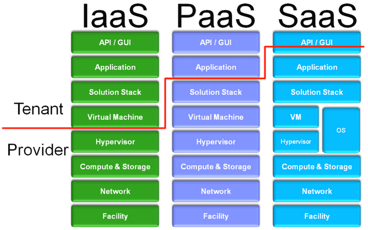

Delineation of Responsibility
Figure 1 shows the delineation of responsibility based on each of the three cloud service models. This figure gives us a nice reference to quickly identify which cloud layers could be considered in scope for our penetration testing. The red line identifies which layers fall under the responsibility of the tenant, and which fall under the provider.

For example, assume you are contracted to perform OS level penetration testing. During the initial negotiations, it is identified that your customer is a tenant in a public cloud. That customer would like to include these resources in the scope of the testing.
Given the above figure, this may only be possible if they are deployed in public IaaS. If they are using PaaS or SaaS, the OS or VM resources are controlled by another entity, and thus they would be considered out of scope. As an analogy, think of being hired to perform a network level penetration test and the customer wants to include their upstream ISP in the testing. Both of these situations could lead you into legal difficulty.
When performing penetration testing, each service model has its own idiosyncrasies. In the next few sections we'll take a deeper dive on what you can expect when testing each of these service models.